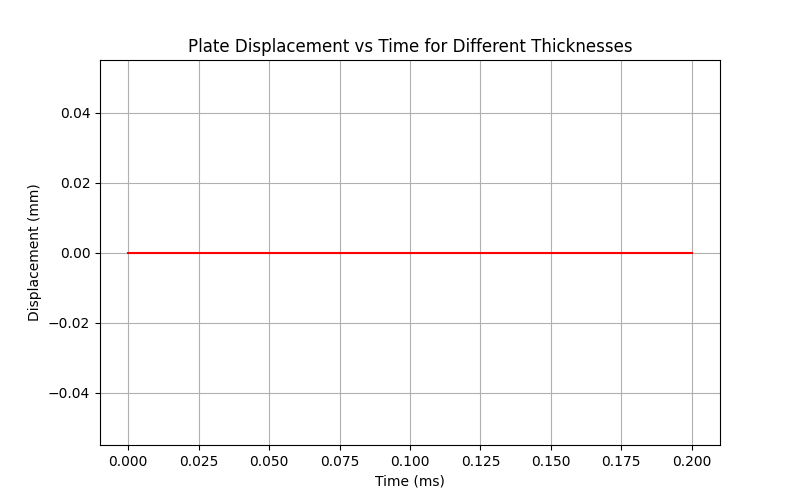

Note
Go to the end to download the full example code.
Plate Thickness Optimization#
This example shows how to use PyDyna to import a mesh, set up a plate thickness optimization analysis, run the analysis iteratively until a target displacement is reached,and then display the results of that optimization.
Perform required imports#
Import required packages, including those for the keywords, deck, and solver.
import os
import pathlib
import shutil
import tempfile
import ansys.dpf.core as dpf
from ansys.dpf.core import operators as ops
import matplotlib.pyplot as plt
import pandas as pd
from ansys.dyna.core import Deck, keywords as kwd
# from ansys.dyna.core.run.linux_runner import LinuxRunner
from ansys.dyna.core.run.local_solver import run_dyna
from ansys.dyna.core.run.options import MemoryUnit, MpiOption, Precision
from ansys.dyna.core.utils.download_utilities import EXAMPLES_PATH, download_manager
# from ansys.dyna.core.run.windows_runner import WindowsRunner
workdir = tempfile.TemporaryDirectory()
mesh_file_name = "bar_impact_mesh.k"
mesh_file = download_manager.download_file(
mesh_file_name, "ls-dyna/Bar_Impact", destination=os.path.join(EXAMPLES_PATH, "Bar_Impact")
)
# If you'd like to insert your own path to a local mesh file you can do so by replacing the line
# above with:
# mesh_file = "C:\Path\to\file\\bar_impact_mesh.k"
Set analysis parameters#
Define the number of iterations, thickness increment, target displacement, and initial velocity for the analysis
max_iterations = 20
initial_thickness = 0.1
thickness_increment = 0.05
target_displacement = 1.0
initial_velocity = 275.0e2
Create a deck and keywords#
Create a deck, which is the container for all the keywords. Then, create and append individual keywords to the deck.
def create_input_deck(thickness):
deck = Deck()
deck.title = "Bar Thickness - %.4s" % thickness
# Define bar material
mat_1 = kwd.Mat003(mid=1)
mat_1.ro = 7.85000e-9
mat_1.e = 150000.0
mat_1.pr = 0.34
mat_1.sigy = 390.0
mat_1.etan = 90.0
# Define bar section
sec_1 = kwd.SectionSolid(secid=1)
sec_1.elform = 1
# Define plate material
mat_2 = kwd.Mat003(mid=2)
mat_2.ro = 7.85000e-9
mat_2.e = 1500000.0
mat_2.pr = 0.34
mat_2.sigy = 3900.0
mat_2.etan = 900.0
# Define plate section
sec_2 = kwd.SectionShell(secid=2)
sec_2.elform = 2
sec_2.t1 = thickness
sec_2.t2 = thickness
sec_2.t3 = thickness
sec_2.t4 = thickness
# Define bar part
part_1 = kwd.Part()
part_1.parts = pd.DataFrame({"pid": [1], "mid": [mat_1.mid], "secid": [sec_1.secid]})
# Define plate part
part_2 = kwd.Part()
part_2.parts = pd.DataFrame({"pid": [2], "mid": [mat_2.mid], "secid": [sec_2.secid]})
# Define coordinate system
cs_1 = kwd.DefineCoordinateSystem(cid=1)
cs_1.xl = 1.0
cs_1.yp = 1.0
# Define initial velocity
init_vel = kwd.InitialVelocityGeneration()
init_vel.id = part_1.parts["pid"][0]
init_vel.styp = 2
init_vel.vy = initial_velocity
init_vel.icid = cs_1.cid
# Define box for node set
box_1 = kwd.DefineBox(boxid=1, xmn=-500, xmx=500, ymn=39.0, ymx=40.1, zmn=-500, zmx=500)
# Create node set
set_node_1 = kwd.SetNodeGeneral()
set_node_1.sid = 1
set_node_1.option = "BOX"
set_node_1.e1 = box_1.boxid
# Define boxes for boundary conditions
box_plate_zN = kwd.DefineBox(boxid=2, xmn=-0.1, xmx=10.1, ymn=41.0, ymx=43.0, zmn=-10.1, zmx=-9.9)
box_plate_zP = kwd.DefineBox(boxid=3, xmn=0.1, xmx=9.9, ymn=41.0, ymx=43.0, zmn=-0.1, zmx=0.1)
box_plate_xP = kwd.DefineBox(boxid=4, xmn=9.9, xmx=10.1, ymn=41.0, ymx=43.0, zmn=-10.1, zmx=0.1)
box_plate_xN = kwd.DefineBox(boxid=5, xmn=-0.1, xmx=0.1, ymn=41.0, ymx=43.0, zmn=-9.9, zmx=-0.1)
# Create node set for fixed BC
set_node_Fixed = kwd.SetNodeGeneral()
set_node_Fixed.sid = 2
set_node_Fixed.option = "BOX"
set_node_Fixed.e1 = box_plate_zN.boxid
set_node_Fixed.e2 = box_plate_xP.boxid
# Define fixed Boundary Conditions
fixed_bc = kwd.BoundarySpcSet(dofx=1, dofy=1, dofz=1, dofrx=1, dofry=1, dofrz=1)
fixed_bc.nsid = set_node_Fixed.sid
# Create node set for symmetric BC normal to Z Axis
set_node_zNormal = kwd.SetNodeGeneral()
set_node_zNormal.sid = 3
set_node_zNormal.option = "BOX"
set_node_zNormal.e1 = box_plate_zP.boxid
# Define zNormal Boundary Conditions
zNormal_bc = kwd.BoundarySpcSet(dofx=0, dofy=0, dofz=1, dofrx=1, dofry=1, dofrz=0)
zNormal_bc.nsid = set_node_zNormal.sid
# Create node set for symmetric BC normal to X Axis
set_node_xNormal = kwd.SetNodeGeneral()
set_node_xNormal.sid = 4
set_node_xNormal.option = "BOX"
set_node_xNormal.e1 = box_plate_xN.boxid
# Define xNormal Boundary Conditions
xNormal_bc = kwd.BoundarySpcSet(dofx=1, dofy=0, dofz=0, dofrx=0, dofry=1, dofrz=1)
xNormal_bc.nsid = set_node_xNormal.sid
# Define box for node set of plate
box_plate = kwd.DefineBox(boxid=6, xmn=-1, xmx=11, ymn=39.0, ymx=40.1, zmn=-11, zmx=1)
# Create node set for plate
set_node_plate = kwd.SetNodeGeneral()
set_node_plate.sid = 5
set_node_plate.option = "BOX"
set_node_plate.e1 = box_plate.boxid
# Define contact
contact = kwd.ContactAutomaticSingleSurface(surfa=0)
contact.fs = 0.3
# Define control termination
control_term = kwd.ControlTermination(endtim=2.00000e-4, dtmin=0.001)
# Define database cards
deck_dt_out = 8.00000e-8
deck_glstat = kwd.DatabaseGlstat(dt=deck_dt_out, binary=3)
deck_matsum = kwd.DatabaseMatsum(dt=deck_dt_out, binary=3)
deck_nodout = kwd.DatabaseNodout(dt=deck_dt_out, binary=3)
deck_elout = kwd.DatabaseElout(dt=deck_dt_out, binary=3)
deck_rwforc = kwd.DatabaseRwforc(dt=deck_dt_out, binary=3)
deck_d3plot = kwd.DatabaseBinaryD3Plot(dt=4.00000e-6)
# Define deck history node
deck_hist_node_1 = kwd.DatabaseHistoryNodeSet()
deck_hist_node_1.id1 = set_node_1.sid
# Append all cards to input deck
deck.extend(
[
deck_glstat,
deck_matsum,
deck_nodout,
deck_elout,
deck_rwforc,
deck_d3plot,
set_node_1,
control_term,
contact,
box_1,
box_plate_zN,
box_plate_zP,
box_plate_xP,
box_plate_xN,
box_plate,
set_node_Fixed,
set_node_zNormal,
set_node_xNormal,
set_node_plate,
fixed_bc,
zNormal_bc,
xNormal_bc,
init_vel,
cs_1,
part_1,
mat_1,
sec_1,
part_2,
mat_2,
sec_2,
deck_hist_node_1,
]
)
return deck
def write_input_deck(**kwargs):
thickness = kwargs.get("thickness")
wd = kwargs.get("wd")
if not all((thickness, wd)):
raise Exception("Missing input!")
deck = create_input_deck(thickness)
# Import mesh
deck.append(kwd.Include(filename=mesh_file_name))
# Write LS-DYNA input deck
os.makedirs(wd, exist_ok=True)
deck.export_file(os.path.join(wd, "input.k"))
shutil.copyfile(mesh_file, os.path.join(wd, mesh_file_name))
Define the Dyna solver function#
def run_job(directory):
run_dyna(
"input.k",
working_directory=directory,
ncpu=2,
memory=2,
precision=Precision.SINGLE,
mpi_option=MpiOption.MPP_INTEL_MPI,
memory_unit=MemoryUnit.MB,
)
assert os.path.isfile(os.path.join(directory, "d3plot")), "No result file found"
Define the DPF output function#
def get_plate_displacement(directory):
ds = dpf.DataSources()
result_file = os.path.join(directory, "d3plot")
assert os.path.isfile(result_file)
ds.set_result_file_path(result_file, "d3plot")
model = dpf.Model(ds)
# Create mesh operator
mes_op = dpf.operators.mesh.mesh_provider()
mes_op.inputs.data_sources.connect(ds)
# Isolate Part 2
mes_op.connect(25, [2])
# Extract mesh
part_mesh = mes_op.outputs.mesh()
# Create scoping operator from mesh using from_mesh scoping operator
part_mesh_op = dpf.operators.scoping.from_mesh()
part_mesh_op.inputs.mesh.connect(part_mesh)
part_scoping = part_mesh_op.outputs.scoping()
# create displacement entity, apply part scoping
disp = model.results.displacement
disp.on_mesh_scoping(part_scoping)
disp_op = disp.on_all_time_freqs()
# Find min and max displacement
min_max_op = ops.min_max.min_max_fc(ops.math.norm_fc(disp_op))
min_displ = min_max_op.outputs.field_min()
max_displ = min_max_op.outputs.field_max()
max_disp_data = max_displ.data
min_disp_data = min_displ.data
tdata = model.metadata.time_freq_support.time_frequencies.data
return tdata, max_disp_data, min_disp_data
Run solver iteratively until target displacement is reached#
all_results = []
for iteration in range(max_iterations):
# Define thickness for this iteration
thickness = initial_thickness + thickness_increment * iteration
wd = os.path.join(workdir.name, f"thickness_{thickness:.4f}")
pathlib.Path(wd).mkdir(exist_ok=True)
# Create LS-Dyna input deck with new thickness
write_input_deck(thickness=thickness, wd=wd)
# Run solver
run_job(wd)
# Post-process displacement
time_data, max_disp_data, min_disp_data = get_plate_displacement(wd)
reduced_time_data = [t * 1000 for t in time_data] # Convert to ms
# Store result
all_results.append({"thickness": thickness, "time": reduced_time_data, "max_disp": max_disp_data})
# Check if target displacement is reached
if max(max_disp_data) <= target_displacement:
print(f"Target displacement reached at thickness {thickness:.4f}")
break
License option : check ansys licenses only
***************************************************************
* ANSYS LEGAL NOTICES *
***************************************************************
* *
* Copyright 1971-2025 ANSYS, Inc. All rights reserved. *
* Unauthorized use, distribution or duplication is *
* prohibited. *
* *
* Ansys is a registered trademark of ANSYS, Inc. or its *
* subsidiaries in the United States or other countries. *
* See the ANSYS, Inc. online documentation or the ANSYS, Inc. *
* documentation CD or online help for the complete Legal *
* Notice. *
* *
***************************************************************
* *
* THIS ANSYS SOFTWARE PRODUCT AND PROGRAM DOCUMENTATION *
* INCLUDE TRADE SECRETS AND CONFIDENTIAL AND PROPRIETARY *
* PRODUCTS OF ANSYS, INC., ITS SUBSIDIARIES, OR LICENSORS. *
* The software products and documentation are furnished by *
* ANSYS, Inc. or its subsidiaries under a software license *
* agreement that contains provisions concerning *
* non-disclosure, copying, length and nature of use, *
* compliance with exporting laws, warranties, disclaimers, *
* limitations of liability, and remedies, and other *
* provisions. The software products and documentation may be *
* used, disclosed, transferred, or copied only in accordance *
* with the terms and conditions of that software license *
* agreement. *
* *
* ANSYS, Inc. is a UL registered *
* ISO 9001:2015 company. *
* *
***************************************************************
* *
* This product is subject to U.S. laws governing export and *
* re-export. *
* *
* For U.S. Government users, except as specifically granted *
* by the ANSYS, Inc. software license agreement, the use, *
* duplication, or disclosure by the United States Government *
* is subject to restrictions stated in the ANSYS, Inc. *
* software license agreement and FAR 12.212 (for non-DOD *
* licenses). *
* *
***************************************************************
Date: 11/13/2026 Time: 08:59:46
___________________________________________________
| |
| LS-DYNA, A Program for Nonlinear Dynamic |
| Analysis of Structures in Three Dimensions |
| Date : 10/01/2025 Time: 13:03:42 |
| Version : mpp d R16 |
| Revision: R16.1.1-20-g0c90cad538 |
| AnLicVer: 2025 R2 (20250506+dl-73-g4dde854) |
| |
| Features enabled in this version: |
| Distributed Memory Parallel |
| CESE CHEMISTRY EM ICFD STOCHASTIC_PARTICLES |
| FFTW (multi-dimensional FFTW Library) |
| ANSYSLIC enabled |
| |
| Platform : OpenMPI 4.0.5 x86-64 |
| OS Level : Linux 3.10.0 uum |
| Compiler : Intel Fortran Compiler 19.0 SSE2 |
| Hostname : 11ee00809b36 |
| Precision : Double precision (I8R8) |
| |
| Unauthorized use infringes Ansys Inc. copyrights |
|___________________________________________________|
Messages file /ansys_inc/v252/licensingclient/language/en-us/ansysli_msgs.xml does not exist.
[license/info] Successfully checked out 2 of "dyna_solver_core".
[license/info] --> Checkout ID: 11ee00809b36-root-24-000003 (days left: 67)
[license/info] --> Customer ID: 0
[license/info] Successfully started "LSDYNA (Core-based License)".
Executing with ANSYS license
Command line options: i=input.k
memory=2m
Input file: input.k
The native file format : 64-bit small endian
Memory size from command line: 2000000, 0
Memory size from command line: 2000000, 2000000
Memory for the head node
Memory installed (MB) : 32086
Memory available (MB) : 30150
on UNIX computers note the following change:
ctrl-c interrupts ls-dyna and prompts for a sense switch.
type the desired sense switch: sw1., sw2., etc. to continue
the execution. ls-dyna will respond as explained in the users manual
type response
----- ------------------------------------------------------------
quit ls-dyna terminates.
stop ls-dyna terminates.
sw1. a restart file is written and ls-dyna terminates.
sw2. ls-dyna responds with time and cycle numbers.
sw3. a restart file is written and ls-dyna continues calculations.
sw4. a plot state is written and ls-dyna continues calculations.
sw5. ls-dyna enters interactive graphics phase.
swa. ls-dyna flushes all output i/o buffers.
swb. a dynain is written and ls-dyna continues calculations.
swc. a restart and dynain are written and ls-dyna continues calculations.
swd. a restart and dynain are written and ls-dyna terminates.
swe. stop dynamic relaxation just as though convergence
endtime=time change the termination time
lpri toggle implicit lin. alg. solver output on/off.
nlpr toggle implicit nonlinear solver output on/off.
iter toggle implicit output to d3iter database on/off.
prof output timing data to prof.out and continue.
conv force implicit nonlinear convergence for current time step.
ttrm terminate implicit time step, reduce time step, retry time step.
rtrm terminate implicit at end of current time step.
******** notice ******** notice ******** notice ********
* *
* This is the LS-DYNA Finite Element code. *
* *
* Neither LST nor the authors assume any responsibility for *
* the validity, accuracy, or applicability of any results *
* obtained from this system. Users must verify their own *
* results. *
* *
* LST endeavors to make the LS-DYNA code as complete, *
* accurate and easy to use as possible. *
* Suggestions and comments are welcomed. Please report any *
* errors encountered in either the documentation or results *
* immediately to LST through your site focus. *
* *
* Copyright (C) 1990-2021 *
* by Livermore Software Technology, LLC *
* All rights reserved *
* *
******** notice ******** notice ******** notice ********
Beginning of keyword reader 11/13/26 08:59:55
11/13/26 08:59:55
Open include file: bar_impact_mesh.k
Memory required to process keyword : 479199
Additional dynamic memory required : 2367266
MPP execution with 2 procs
Initial reading of file 11/13/26 08:59:55
Loading usermat shared library /opt/dyna/ls-dyna_mpp_d_R16_1_1_x64_centos79_ifort190_sse2_openmpi405_sharelib/libmppdyna_d_R16.1.1-20-g0c90cad538_sse2_ifort190_openmpi.so
build: R16.1.1-20-g0c90cad538
version: mpp
precision: double
nlq: 72
This binary:
build: R16.1.1-20-g0c90cad538
version: mpp
precision: double
nlq: 72
Performing Decomposition -- Phase 1 11/13/26 08:59:55
Performing Recursive Coordinate Bisection (RCB)
Memory required for decomposition : 20096
Additional dynamic memory required : 2369744
Performing Decomposition -- Phase 2 11/13/26 08:59:55
Performing Decomposition -- Phase 3 11/13/26 08:59:55
Loading usermat shared library /opt/dyna/ls-dyna_mpp_d_R16_1_1_x64_centos79_ifort190_sse2_openmpi405_sharelib/libmppdyna_d_R16.1.1-20-g0c90cad538_sse2_ifort190_openmpi.so
build: R16.1.1-20-g0c90cad538
version: mpp
precision: double
nlq: 72
This binary:
build: R16.1.1-20-g0c90cad538
version: mpp
precision: double
nlq: 72
Loading usermat shared library /opt/dyna/ls-dyna_mpp_d_R16_1_1_x64_centos79_ifort190_sse2_openmpi405_sharelib/libmppdyna_d_R16.1.1-20-g0c90cad538_sse2_ifort190_openmpi.so
build: R16.1.1-20-g0c90cad538
version: mpp
precision: double
nlq: 72
This binary:
build: R16.1.1-20-g0c90cad538
version: mpp
precision: double
nlq: 72
input of data is completed
initial kinetic energy = 0.00000000E+00
The LS-DYNA time step size should not exceed 2.356E-08
to avoid contact instabilities. If the step size is
bigger then scale the penalty of the offending surface.
The following binary output files are being created,
and contain data equivalent to the indicated ascii output files
binout0000: (on processor 0)
nodout
glstat
matsum
Memory required to begin solution (memory= 480K memory2= 9383)
Minimum 7422 on processor 1
Maximum 9383 on processor 0
Average 8402
Additional dynamically allocated memory
Minimum 3251K on processor 0
Maximum 3252K on processor 1
Average 3251K
Total allocated memory
Minimum 3259K on processor 1
Maximum 3261K on processor 0
Average 3260K
initialization completed
Initial penetration for SI 1 0.00000 (tol= 0.00186)
1 t 0.0000E+00 dt 3.83E-08 flush i/o buffers 11/13/26 08:59:55
1 t 0.0000E+00 dt 3.83E-08 write d3plot file 11/13/26 08:59:55
cpu time per zone cycle............ 254 nanoseconds
average cpu time per zone cycle.... 942 nanoseconds
average clock time per zone cycle.. 1075 nanoseconds
estimated total cpu time = 5 sec ( 0 hrs 0 mins)
estimated cpu time to complete = 5 sec ( 0 hrs 0 mins)
estimated total clock time = 13 sec ( 0 hrs 0 mins)
estimated clock time to complete = 5 sec ( 0 hrs 0 mins)
termination time = 2.000E-04
105 t 3.9799E-06 dt 3.83E-08 write d3plot file 11/13/26 08:59:55
210 t 7.9980E-06 dt 3.83E-08 write d3plot file 11/13/26 08:59:55
314 t 1.1978E-05 dt 3.83E-08 write d3plot file 11/13/26 08:59:55
419 t 1.5996E-05 dt 3.83E-08 write d3plot file 11/13/26 08:59:55
523 t 1.9976E-05 dt 3.83E-08 write d3plot file 11/13/26 08:59:55
628 t 2.3994E-05 dt 3.83E-08 write d3plot file 11/13/26 08:59:55
732 t 2.7974E-05 dt 3.83E-08 write d3plot file 11/13/26 08:59:55
837 t 3.1992E-05 dt 3.83E-08 write d3plot file 11/13/26 08:59:55
941 t 3.5972E-05 dt 3.83E-08 write d3plot file 11/13/26 08:59:55
1046 t 3.9990E-05 dt 3.83E-08 write d3plot file 11/13/26 08:59:55
1150 t 4.3970E-05 dt 3.83E-08 write d3plot file 11/13/26 08:59:55
1255 t 4.7988E-05 dt 3.83E-08 write d3plot file 11/13/26 08:59:55
1359 t 5.1968E-05 dt 3.83E-08 write d3plot file 11/13/26 08:59:56
1464 t 5.5986E-05 dt 3.83E-08 write d3plot file 11/13/26 08:59:56
1568 t 5.9966E-05 dt 3.83E-08 write d3plot file 11/13/26 08:59:56
1673 t 6.3984E-05 dt 3.83E-08 write d3plot file 11/13/26 08:59:56
1777 t 6.7964E-05 dt 3.83E-08 write d3plot file 11/13/26 08:59:56
1882 t 7.1982E-05 dt 3.83E-08 write d3plot file 11/13/26 08:59:56
1986 t 7.5962E-05 dt 3.83E-08 write d3plot file 11/13/26 08:59:56
2091 t 7.9980E-05 dt 3.83E-08 write d3plot file 11/13/26 08:59:56
2196 t 8.3998E-05 dt 3.83E-08 write d3plot file 11/13/26 08:59:56
2300 t 8.7978E-05 dt 3.83E-08 write d3plot file 11/13/26 08:59:56
2405 t 9.1996E-05 dt 3.83E-08 write d3plot file 11/13/26 08:59:56
2509 t 9.5976E-05 dt 3.83E-08 write d3plot file 11/13/26 08:59:56
2614 t 9.9994E-05 dt 3.83E-08 write d3plot file 11/13/26 08:59:56
2718 t 1.0397E-04 dt 3.83E-08 write d3plot file 11/13/26 08:59:56
2823 t 1.0799E-04 dt 3.83E-08 write d3plot file 11/13/26 08:59:56
2927 t 1.1197E-04 dt 3.83E-08 write d3plot file 11/13/26 08:59:56
3032 t 1.1599E-04 dt 3.83E-08 write d3plot file 11/13/26 08:59:56
3136 t 1.1997E-04 dt 3.83E-08 write d3plot file 11/13/26 08:59:57
3241 t 1.2399E-04 dt 3.83E-08 write d3plot file 11/13/26 08:59:57
3345 t 1.2797E-04 dt 3.83E-08 write d3plot file 11/13/26 08:59:57
3450 t 1.3199E-04 dt 3.83E-08 write d3plot file 11/13/26 08:59:57
3554 t 1.3597E-04 dt 3.83E-08 write d3plot file 11/13/26 08:59:57
3659 t 1.3998E-04 dt 3.83E-08 write d3plot file 11/13/26 08:59:57
3763 t 1.4396E-04 dt 3.83E-08 write d3plot file 11/13/26 08:59:57
3868 t 1.4798E-04 dt 3.83E-08 write d3plot file 11/13/26 08:59:57
3972 t 1.5196E-04 dt 3.83E-08 write d3plot file 11/13/26 08:59:57
4077 t 1.5598E-04 dt 3.83E-08 write d3plot file 11/13/26 08:59:57
4182 t 1.6000E-04 dt 3.83E-08 write d3plot file 11/13/26 08:59:57
4286 t 1.6398E-04 dt 3.83E-08 write d3plot file 11/13/26 08:59:57
4391 t 1.6800E-04 dt 3.83E-08 write d3plot file 11/13/26 08:59:57
4495 t 1.7198E-04 dt 3.83E-08 write d3plot file 11/13/26 08:59:57
4600 t 1.7599E-04 dt 3.83E-08 write d3plot file 11/13/26 08:59:57
4704 t 1.7997E-04 dt 3.83E-08 write d3plot file 11/13/26 08:59:57
4809 t 1.8399E-04 dt 3.83E-08 write d3plot file 11/13/26 08:59:57
4913 t 1.8797E-04 dt 3.83E-08 write d3plot file 11/13/26 08:59:57
5000 t 1.9130E-04 dt 3.83E-08 flush i/o buffers 11/13/26 08:59:58
5018 t 1.9199E-04 dt 3.83E-08 write d3plot file 11/13/26 08:59:58
5122 t 1.9597E-04 dt 3.83E-08 write d3plot file 11/13/26 08:59:58
5227 t 1.9999E-04 dt 3.83E-08 write d3plot file 11/13/26 08:59:58
*** termination time reached ***
5227 t 2.0003E-04 dt 3.83E-08 write d3dump01 file 11/13/26 08:59:58
5227 t 2.0003E-04 dt 3.83E-08 flush i/o buffers 11/13/26 08:59:58
5227 t 2.0003E-04 dt 3.83E-08 write d3plot file 11/13/26 08:59:58
N o r m a l t e r m i n a t i o n 11/13/26 08:59:58
Memory required to complete solution (memory= 480K memory2= 9383)
Minimum 7422 on processor 1
Maximum 9383 on processor 0
Average 8402
Additional dynamically allocated memory
Minimum 3264K on processor 0
Maximum 3266K on processor 1
Average 3265K
Total allocated memory
Minimum 3273K on processor 1
Maximum 3274K on processor 0
Average 3274K
T i m i n g i n f o r m a t i o n
CPU(seconds) %CPU Clock(seconds) %Clock
----------------------------------------------------------------
Keyword Processing ... 2.4596E-02 0.33 2.4650E-02 0.21
KW Reading ......... 3.8279E-03 0.05 3.8280E-03 0.03
KW Writing ......... 3.1284E-03 0.04 3.1285E-03 0.03
MPP Decomposition .... 3.3762E-02 0.46 3.4524E-02 0.30
Init Proc .......... 1.6616E-02 0.23 1.7123E-02 0.15
Decomposition ...... 4.4827E-03 0.06 4.4830E-03 0.04
Translation ........ 1.2597E-02 0.17 1.2851E-02 0.11
Initialization ....... 4.3513E+00 59.18 8.6002E+00 74.10
Init Proc Phase 1 .. 1.0426E-02 0.14 1.0872E-02 0.09
Init Proc Phase 2 .. 2.7249E-03 0.04 3.1615E-03 0.03
Init solver .......... 9.3475E-05 0.00 9.4000E-05 0.00
Element processing ... 5.6940E-01 7.74 5.6919E-01 4.90
Solids ............. 4.2388E-01 5.77 4.2287E-01 3.64
Shells ............. 1.1438E-01 1.56 1.1443E-01 0.99
E Other ............ 2.1185E-02 0.29 2.0920E-02 0.18
Binary databases ..... 9.6577E-02 1.31 9.6902E-02 0.83
ASCII database ....... 1.2704E+00 17.28 1.2696E+00 10.94
Contact algorithm .... 1.4671E-01 2.00 1.4642E-01 1.26
Interf. ID 1 9.7505E-02 1.33 9.7038E-02 0.84
Rigid Bodies ......... 3.7879E-02 0.52 3.7994E-02 0.33
Mass Scaling ....... 5.5766E-03 0.08 5.6550E-03 0.05
Force gather ....... 8.5057E-03 0.12 8.5315E-03 0.07
Kinematic Update ... 3.9257E-03 0.05 3.9275E-03 0.03
Update nodes ....... 4.6739E-03 0.06 4.7875E-03 0.04
Time step size ....... 1.2200E-02 0.17 1.2634E-02 0.11
Time step Sharing .... 1.9317E-02 0.26 1.9105E-02 0.16
Group force file ..... 4.7662E-03 0.06 4.9365E-03 0.04
Others ............... 2.2041E-02 0.30 2.2283E-02 0.19
Force Sharing ........ 2.4735E-02 0.34 2.4533E-02 0.21
Misc. 1 .............. 4.9371E-01 6.71 4.9770E-01 4.29
Scale Masses ....... 4.2054E-03 0.06 4.2960E-03 0.04
Force Constraints .. 4.2648E-03 0.06 4.2950E-03 0.04
Force to Accel ..... 1.1979E-02 0.16 1.1828E-02 0.10
Constraint Sharing . 4.7205E-03 0.06 4.7635E-03 0.04
Misc. 2 .............. 3.8564E-02 0.52 3.8362E-02 0.33
Geometry Update .... 2.0143E-02 0.27 1.9916E-02 0.17
Misc. 3 .............. 7.7998E-02 1.06 7.8767E-02 0.68
Sense Switch Share ... 9.8157E-02 1.34 9.7973E-02 0.84
Misc. 4 .............. 3.0339E-02 0.41 3.0555E-02 0.26
Timestep Init ...... 1.0517E-02 0.14 1.0210E-02 0.09
Apply Loads ........ 1.0252E-02 0.14 1.0205E-02 0.09
----------------------------------------------------------------
T o t a l s 7.3525E+00 100.00 1.1606E+01 100.00
Problem time = 2.0003E-04
Problem cycle = 5227
Total CPU time = 7 seconds ( 0 hours 0 minutes 7 seconds)
CPU time per zone cycle = 1343.490 nanoseconds
Clock time per zone cycle= 550.606 nanoseconds
Parallel execution with 2 MPP proc
NLQ used/max 72/ 72
C P U T i m i n g i n f o r m a t i o n
Processor Hostname CPU/Avg_CPU CPU(seconds)
---------------------------------------------------------------------------
# 0 11ee00809b36 0.42412 3.1300E+00
# 1 11ee00809b36 1.57588 1.1630E+01
---------------------------------------------------------------------------
T o t a l s 1.4760E+01
Start time 11/13/2026 08:59:55
End time 11/13/2026 08:59:58
Elapsed time 3 seconds for 5227 cycles using 2 MPP procs
( 0 hour 0 minute 3 seconds)
N o r m a l t e r m i n a t i o n 11/13/26 08:59:58
Target displacement reached at thickness 0.1000
Generate graphical output#
# Now plot all results
plt.figure(figsize=(8, 5))
for res in all_results:
thickness = res["thickness"]
time_data = res["time"]
max_disp_data = res["max_disp"]
color = "r" if max(max_disp_data) <= target_displacement else "b"
label = f"Thickness {thickness:.4f}"
plt.plot(time_data, max_disp_data, color=color, label=label)
plt.xlabel("Time (ms)")
plt.ylabel("Displacement (mm)")
plt.title("Plate Displacement vs Time for Different Thicknesses")
plt.grid(True)
plt.show()

Total running time of the script: (0 minutes 40.155 seconds)